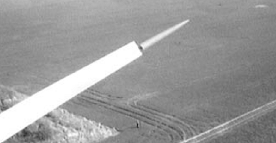

En aerogeneradores antiguos (anteriores al año 2000) y de baja potencia (<= 300KW) las palas no tenían mecanismo para cambiar su angulo de pitch, y por tanto no se podía utilizar el mecanismo descrito anteriormente.
En estos modelos se utiliza un mecanismo de freno aerodinámico consistente en que, el extremo de la pala puede girar a lo largo del eje de la pala, como se muestra en la figura siguiente.

Video que muestra una parada con este tipo de pala: